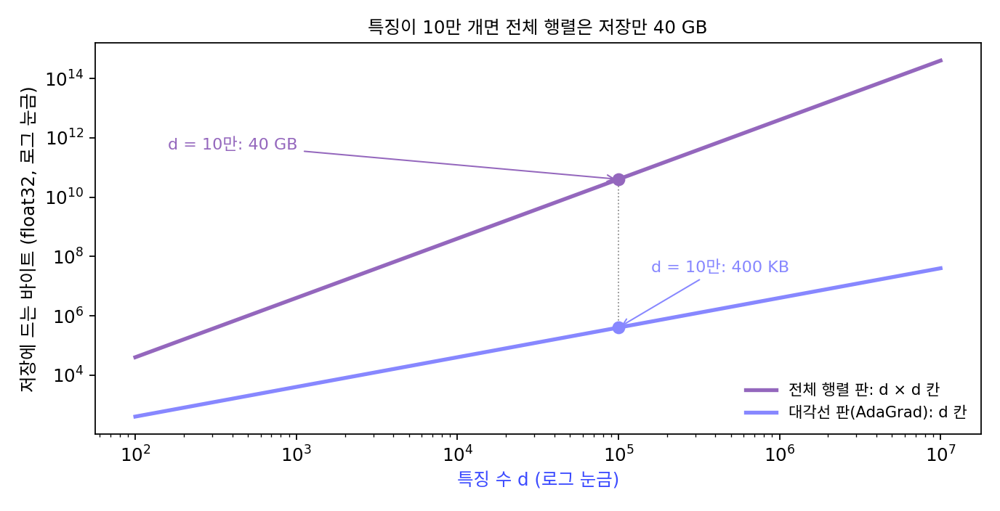
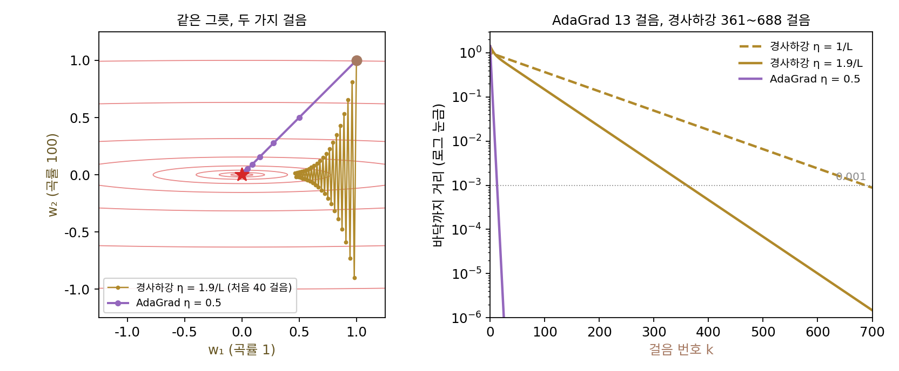
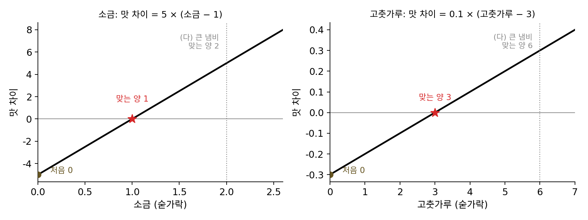
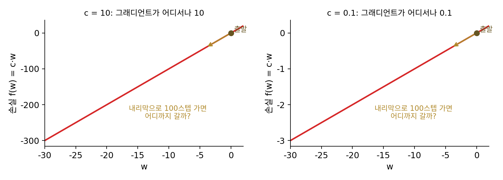
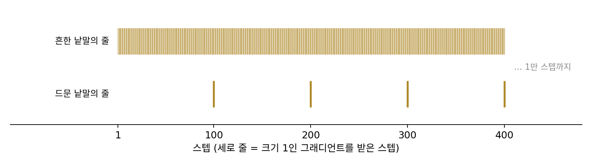

적응 학습률: AdaGrad 에서 AdamW 까지
이 장의 물음
파이토치로 언어 모델을 학습시키는 예제 코드는 거의 다 torch.optim.AdamW(model.parameters(), lr=3e-4) 같은 한 줄로 옵티마이저를 만들고, 학습률 말고는 기본값을 그대로 쓴다. 이 한 줄이 무엇을 하는지 모른 채로도 학습은 잘 된다. 그런데 같은 모델을 torch.optim.SGD 로 바꾸고 학습률을 몇 번 바꿔 보면, 손실이 터지거나 거의 움직이지 않거나 둘 중 하나가 되기 쉽다. 같은 그래디언트를 받아서 걷는데, AdamW 는 왜 학습률을 그렇게 까다롭게 고르지 않아도 될까?
길쭉한 골짜기에서 경사하강이 느렸던 것은 조건수(가장 큰 곡률 ÷ 가장 작은 곡률) 때문이었다. 학습률 하나를 모든 파라미터에 쓰니, 가장 가파른 방향에 맞춰 작게 잡은 학습률로 가장 완만한 방향을 기어가야 했다. 모멘텀(지난 그래디언트를 쌓아 가며 걷는 방법)은 스텝 수를 조건수의 제곱근으로 줄였지만, 여전히 모든 파라미터가 학습률 하나를 나눠 썼다. 파라미터마다 학습률을 따로 주면 좋겠지만, 파라미터가 1억 개라면 학습률 1억 개를 손으로 고를 수는 없다.
옵티마이저 설정에는 학습률 말고도 숫자가 몇 개 더 있는데, 파이토치 기본값은 betas=(0.9, 0.999), eps=1e-8 이다. 그런데 GPT-3 를 학습시킨 팀은 두 번째 숫자를 0.95 로 바꿨다고 적었고, 메타의 LLaMA 도 같은 값을 썼다. weight_decay 도 이상해서, torch.optim.Adam 에도 같은 이름의 칸이 있는데 같은 값을 넣어도 AdamW 와 결과가 다르다. 그리고 Adam 을 「자연 그래디언트를 값싸게 흉내 낸 것」이라고 소개하는 글을 자주 보는데, 그 말은 얼마나 맞을까?
이 장은 다음 물음에 차례로 답한다.
- 파라미터마다 학습률을 따로 정하려면, 손으로 고르지 않고 무엇을 보고 정할 수 있을까?
- 학습이 길어지면 그렇게 정한 학습률이 어떻게 될까? 지형이 바뀌어도 따라갈 수 있을까?
- 그래디언트의 평균과 그래디언트 제곱의 평균을 함께 쓰면, 학습을 막 시작했을 때 무엇이 어긋날까?
betas의 두 번째 숫자와eps는 무엇을 정하고, 큰 모델에서는 왜 다른 값을 고를까?- 가중치를 조금씩 줄이는 일(가중치 감쇠)을 Adam 안에 넣으면 왜 생각과 다르게 동작할까?
- Adam 이 나누는 값은 정말 곡률을 닮았을까?
AdaGrad: 좌표마다 지나온 그래디언트로 학습률을 나눈다
조건수가 크면 스텝이 늘어나는 것은 모든 파라미터가 학습률 하나를 나눠 쓰기 때문이다. 곡률이 1인 방향과 100인 방향이 있는 그릇이라면, 곡률이 100인 방향에는 학습률 1/100을, 곡률이 1인 방향에는 학습률 1을 주면 두 방향 모두 한 스텝에 바닥에 닿는다. 뉴턴법이 헤시안(2차 편미분을 모은 행렬)으로 나누는 것이 바로 이 일이지만, 파라미터가 많으면 헤시안은 계산할 수도 저장할 수도 없다. 그렇다면 파라미터마다 따로 기록해 둘 수 있는 값싼 정보는 없을까? 스텝마다 받는 그래디언트는 이미 손에 있으니, 지금까지 받아 온 그래디언트만 보고 그 좌표의 학습률을 정할 수는 없을까?
역사: 건초 더미 속의 바늘
2010년 학습 이론 학회(COLT)에 버클리의 대학원생 존 두치(John Duchi), IBM 알마덴 연구소의 엘라드 하잔(Elad Hazan), 구글의 요람 싱어(Yoram Singer)가 「온라인 학습과 확률적 최적화를 위한 적응적 서브그래디언트 방법」을 냈다. 늘린 판은 2011년 기계학습 연구 저널(JMLR) 12권에 실렸다. 그들이 겨냥한 것은 글 분류처럼 특징이 수십만 개인데 한 문서에는 그 가운데 몇 개만 나타나는 문제였다. 드물게 나오는 낱말이 오히려 분류를 크게 가르는 일이 많은데, 학습률 하나로 걸으면 그런 특징은 나올 때마다 조금씩만 고쳐지고 끝난다. 그들은 초록에서 이 방법이 「건초 더미 속의 바늘, 곧 아주 쓸모 있지만 드물게 보이는 특징」을 찾게 해 준다고 적었다.
처음 낸 꼴은 지금보다 컸다. 지나온 그래디언트들로 행렬 하나(그래디언트 벡터마다 자기 자신과의 바깥곱을 모두 더한 것)를 만들고, 그 행렬의 −1/2 제곱을 그래디언트에 곱하는 방법이었다. 그러나 파라미터가 d개면 이 행렬은 d × d 이고, 그 제곱근을 스텝마다 구해야 한다. 그들은 논문에서 이것이 고차원에서는 계산할 수 없다고 적고, 행렬의 대각선만 남긴 판을 실제로 쓸 방법으로 내놓았다. 이름은 적응 그래디언트(adaptive gradient)를 줄인 AdaGrad 다. 같은 학회에 구글의 브렌던 맥머핸(H. Brendan McMahan)과 매슈 스트리터(Matthew Streeter)도 좌표마다 다르게 조정하는 방법을 따로 냈다.


행렬 전체를 쓰는 판이 더 정확했을 텐데 대각선만 남긴 건 아깝네요. 요즘 GPU면 행렬 제곱근쯤은 금방 구하잖아요.

그들이 겨냥한 글 분류는 특징이 수십만 개였어요. 특징이 10만 개만 돼도 d × d 행렬은 몇 칸이죠?

음, 10만 곱하기 10만이면 100억 칸이요. 한 칸에 4바이트면 40기가바이트… 저장만 해도 그런데 제곱근은 스텝마다 구해야 하네요. 지금 GPU로도 버거워요.

대각선만 남기면 칸이 d개로 줄고, 제곱근도 칸마다 따로 구하면 되네. 대신 좌표끼리 섞인 성분은 버리는 거고.

행렬을 층 모양대로 작은 행렬 몇 개로 나눠 담는 방법은 다섯 해쯤 뒤에야 나와요. 2010년의 논문이 내놓을 수 있었던 것은 전체 행렬 판과 대각선 판, 두 가지였어요.

대각선만 남겨도 좌표마다 학습률은 따로 생기잖아요. 지나온 그래디언트로 나누기만 하면, 곡률이 100배 다른 두 좌표도 같은 스텝 수로 내려갈까요?
곡률이 100배 다른 그릇에서 지나온 그래디언트로 나누기
곡률이 서로 다른 그릇 가운데 가장 간단한 것으로 시작하자. 좌표 둘이 섞이지 않고, 곡률이 1과 100인 그릇 f(w) = ½(w₁² + 100w₂²)이다. 조건수가 100이라서, (1, 1)에서 출발한 경사하강은 학습률 1/100로 688스텝, 가장 좋은 쪽에 가까운 1.9/100로도 361스텝 걸려야 바닥까지 거리 0.001 안에 든다.
이제 좌표마다 지금까지 받은 그래디언트를 제곱해 더해 두고(v), 그 좌표의 그래디언트를 √v로 나눈 뒤 학습률 η = 0.5를 곱해 걸어 보자. 첫 스텝의 그래디언트 (1, 100)에서 좌표 2는 그래디언트가 100인데 √v도 100이라 나누면 1이 되고 좌표 1도 1 ÷ 1 = 1이어서, 두 좌표가 똑같이 0.5만큼 움직여 (0.5, 0.5)에 선다.
| 스텝 | 그래디언트 g | √v | 옮긴 양 ηg/√v | 다음 자리 w |
|---|---|---|---|---|
| 1 | (1, 100) | (1, 100) | (0.5, 0.5) | (0.5, 0.5) |
| 2 | (0.5, 50) | (1.118, 111.80) | (0.2236, 0.2236) | (0.2764, 0.2764) |
| 3 | (0.2764, 27.64) | (1.152, 115.17) | (0.1200, 0.1200) | (0.1564, 0.1564) |
| 4 | (0.1564, 15.64) | (1.162, 116.23) | (0.0673, 0.0673) | (0.0891, 0.0891) |
두 좌표가 스텝마다 같은 자리에 있다. 좌표 2의 그래디언트는 늘 좌표 1의 100배지만, 그 그래디언트들을 모은 √v도 늘 100배라서 나누면 100이 지워진다. 열세 스텝이면 바닥까지 거리 0.001 안에 든다. 곡률을 1과 10000으로 더 벌려도 열세 스텝이고, 출발점을 (1, 0.1)로 바꿔도 열세 스텝이다. 경사하강은 같은 그릇에서 688스텝이었다.

이렇게 좌표마다 지나온 그래디언트의 제곱을 모두 더해 두고, 그 제곱근으로 그 좌표의 그래디언트를 나눠 걷는 방법을 AdaGrad (좌표마다 지나온 그래디언트로 학습률을 나누기 / adaptive gradient)라 한다. AdaGrad 의 업데이트 식에서 제곱, 나눗셈, 제곱근은 모두 좌표마다 따로 한다.
곡률이 지워지는 것은 그릇의 그래디언트가 「곡률 × 바닥까지의 거리」이기 때문이다. 좌표 wᵢ의 곡률을 aᵢ라 하면 그래디언트는 aᵢwᵢ이고, 그래디언트 제곱의 합의 제곱근도 aᵢ × (지나온 거리들의 크기)가 된다. 나누면 곡률 aᵢ가 빠진다. 뉴턴법이 곡률로 나누어 지우는 것을 AdaGrad 는 곡률을 계산하지 않고 지나온 그래디언트의 크기로 흉내 낸 것이다. 다만 √v 안에는 곡률만 들어 있지 않고 지나온 거리와 미니배치마다 달라지는 그래디언트의 크기도 섞여 있다. √v가 곡률을 얼마나 닮았는지는 「Adam 은 자연 그래디언트인가」 절에서 따로 따진다. 그리고 v는 더하기만 하므로 스텝이 쌓일수록 커지는데, 커지기만 하는 v가 학습률을 어떻게 바꾸는지는 아래 문제에서 직접 계산해 본다.
ML에서: 드문 낱말의 임베딩
AdaGrad 가 가장 잘 맞은 곳은 두치와 동료들이 겨냥한 그대로, 특징이 많고 대부분이 드물게 나오는 문제였다. 2014년 스탠퍼드의 제프리 페닝턴(Jeffrey Pennington), 리처드 소처(Richard Socher), 크리스토퍼 매닝(Christopher Manning)이 낸 낱말 임베딩(낱말마다 붙이는 숫자 벡터) GloVe 는 논문에 「AdaGrad 로 학습했고, 처음 학습률은 0.05」라고 적었다. 낱말 임베딩에서는 낱말 하나가 임베딩 표의 한 줄이고, 어떤 낱말이 미니배치에 없으면 그 줄의 그래디언트는 0이다. 흔한 낱말의 줄은 스텝마다 그래디언트를 받아 v가 빨리 커지고, 드문 낱말의 줄은 v가 작게 남아 나올 때마다 크게 움직인다. 파이토치의 torch.optim.Adagrad 는 지금도 기본 학습률 0.01로 들어 있다.
문제 1. 찌개 간 맞추기
찌개를 끓이며 맛을 보고 간을 고친다. 소금은 한 숟가락만 달라져도 맛이 크게 바뀌고(짠맛 차이 = 5 × (소금 − 1)), 고춧가루는 둔하다(매운맛 차이 = 0.1 × (고춧가루 − 3)). 단위는 숟가락이고, 둘 다 0에서 시작한다. (가) 규칙 가: 매번 「맛 차이 × 0.3」만큼 덜어 내거나 더 넣을 때, 두 재료가 모두 맞는 양의 0.05숟가락 안에 들기까지 몇 번 고쳐야 하는가? (나) 규칙 나: 재료마다 지금까지 느낀 맛 차이를 제곱해 더해 두고, 「맛 차이 ÷ √(그 합) × 0.6」만큼 고친다. 몇 번 걸리는가? (다) 규칙 나로 스무 번 고친 뒤 냄비를 큰 것으로 바꿔서 맞는 양이 소금 2, 고춧가루 6이 되었다. 다시 맞추는 데 몇 번 걸리는가?

규칙 가부터 해 볼게. 첫 번에 소금은 0.3 × 5 = 1.5숟가락, 고춧가루는 0.3 × 0.3 = 0.09숟가락이야. 소금은 벌써 맞는 양 1을 넘었네.
그다음은요?
소금은 0.75, 1.125, 0.938 … 넘었다 모자랐다 하면서 들어오는데, 고춧가루는 0.09, 0.177, 0.262로 기어가요. 둘 다 0.05 안에 드는 데 135번이에요.
고춧가루가 느리면 0.3을 키우면 되지 않을까요? 어디까지 키울 수 있죠?
음, 소금은 한 번 고칠 때마다 오차가 (1 − 5 × 비율)배가 되니까, 비율이 0.4를 넘으면 오차가 커지면서 터져요. 0.39로 해도 103번이고요. 가장 예민한 소금이 비율의 상한을 정하고, 고춧가루는 그 작은 비율로 기어가는 거예요.
규칙 나는요?
첫 번에 둘 다 0.6숟가락이에요. 맛 차이를 그 맛 차이의 크기로 나누니까 둔한 재료든 예민한 재료든 첫 스텝이 같아요. 그다음 0.823과 0.975, 0.920과 1.255 … 35번이면 둘 다 들어와요.

소금이 얼마나 예민한지는 계산 어디에도 안 들어갔네. 그럼 (다)에서 냄비를 바꾸면?
67번 더 걸려. 처음 맞출 때보다 두 배 가까이 느려.
왜 느려졌을까요? 고칠 양은 무엇으로 나누죠?

그때까지 모은 합이요. 스무 번 동안 쌓인 합이 그대로 남아서, 새 냄비에서 맛 차이가 커져도 나누는 수가 이미 커져 있어요. 합은 줄지 않으니까 시간이 갈수록 고치는 양이 작아지기만 하고요.

냄비가 바뀌면 맛을 처음부터 다시 봐야 하는데, 규칙 나는 예전 냄비에서 느낀 맛 차이를 끝까지 들고 있는 거네요. 지나온 걸 하나도 잊지 않는 게 AdaGrad 의 약점이에요.
문제 2. 그래디언트가 늘 같은 비탈
손실이 f(w) = c·w인 끝없는 비탈을 내려간다(그래디언트가 어디서나 c). (가) 경사하강(학습률 0.01)과 AdaGrad(학습률 0.1)로 100스텝 돌렸을 때 움직인 거리를 c = 10과 c = 0.1에서 각각 구하라. (나) AdaGrad 로 1만 스텝, 100만 스텝 돌리면 움직인 거리는? (다) AdaGrad 의 스텝은 무엇에 비례해 줄어드는가?

경사하강은 쉬워요. 한 스텝이 0.01 × c니까 c = 10이면 100스텝에 10, c = 0.1이면 0.1이요. 100배 차이. AdaGrad도 비탈이 가파르면 그만큼 많이 가겠죠.
계산해 봤는데 AdaGrad는 c가 10이든 0.1이든 1.859야. 똑같아.

어, 가파른 쪽이 더 갈 줄 알았는데. 왜 똑같지?
그래디언트가 c로 늘 같으니까 √v = c√k이고, k번째 스텝은 0.1 × c/(c√k) = 0.1/√k이야. c가 지워져.
스텝이 0.1/√k이면, 1만 스텝 뒤와 100만 스텝 뒤에는 얼마나 갔을까요?
19.854, 199.854요. 스텝 수를 100배 늘렸는데 거리는 10배밖에 안 늘었어요. 100번째 스텝이 이미 0.01이에요.

100배에 10배면 제곱근이네. 스텝이 0.1/√k니까 그걸 다 더한 게 거리일 텐데, 합을 바로는 못 구하겠어요.
정확히 말고 대충이면요? 합을 적분으로 근사해 봐요.
1/√x를 적분하면 2√x니까, 1/√k를 1부터 K까지 더하면 대략 2√K예요. 거리는 2 × 0.1 × √K고요. 스텝 수가 100배면 스텝은 10분의 1로 줄어요.

신경망 학습은 몇십만 스텝씩 하잖아요. 그러면 뒤로 갈수록 학습률이 거의 0이 되겠네요.
볼록한 문제에서는 학습률을 1/√k로 줄이는 것이 이론상 좋다고 배웠는데, AdaGrad는 그걸 저절로 하고 있었어. 비탈이 끝없이 이어져도 갈수록 느려지는 게 그 대가고.
문제 3. 흔한 낱말과 드문 낱말
낱말 임베딩 표에서 흔한 낱말의 줄은 스텝마다 크기 1인 그래디언트를 받고, 드문 낱말의 줄은 100스텝에 한 번 크기 1인 그래디언트를 받는다. 1만 스텝 동안 (가) 경사하강(학습률 η)으로 두 줄이 움직인 거리와 두 거리의 비는? (나) AdaGrad(학습률 η)로는? (다) 마지막으로 그래디언트를 받은 스텝에서 두 줄의 스텝 크기는?

경사하강은 흔한 낱말이 1만 번, 드문 낱말이 100번 받으니까 1만η 대 100η, 100배요. 드문 낱말은 거의 배우질 못하네요.
AdaGrad 는 어떨까요? 드문 낱말의 줄은 그래디언트를 받지 않는 스텝에 v가 어떻게 되죠?
그래디언트가 0이면 v에 0을 더하니까 v가 바뀌지 않아요. 그럼 쉬는 스텝은 없는 거나 마찬가지네요?
그렇다면 드문 낱말에게 1만 스텝은 몇 스텝짜리 비탈이죠?
받은 100번만 세니까 100스텝짜리 비탈이요. 자기만의 횟수로 √k를 세는 거예요. 돌려 보면 흔한 낱말이 198.54η, 드문 낱말이 18.59η. 비가 10.68이에요.

아까 문제 2(그래디언트가 늘 같은 비탈)랑 같은 계산이야. 거리가 받은 횟수의 제곱근에 비례하니까 횟수가 100배 차이 나도 거리는 √100 = 10배쯤만 차이 나. 마지막 스텝은 흔한 낱말이 0.01η, 드문 낱말이 0.1η. 드문 낱말이 나왔을 때 열 배 크게 고쳐.
두치 논문의 「건초 더미 속의 바늘」이 이거군요. 드물게 나오는 특징을 나올 때 확실히 고쳐 주는 거요.

가족 단톡방에서 1년에 한 번 말하는 삼촌의 한마디는 다들 크게 받아들이고, 하루 종일 말하는 사람 말은 한 마디씩 작게 듣는 거랑 비슷하네.